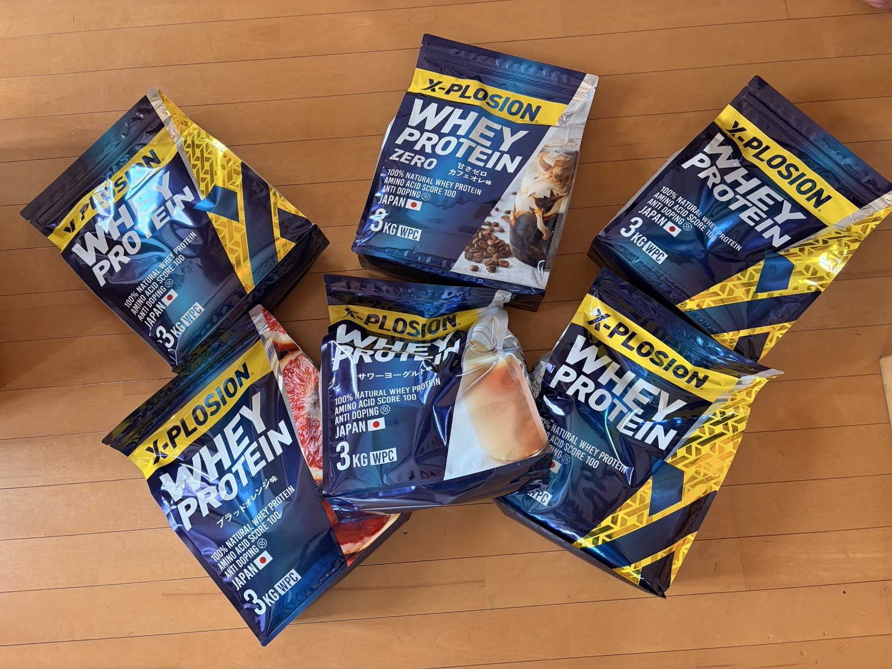
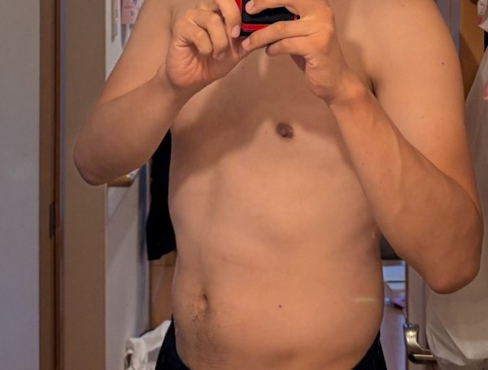

脚が重いので、ご飯300g実験を開始した
体は元気なのに、脚だけが会議を欠席している。これは気合いの問題なのか、糖質の問題なのか。まずはご飯で殴ってみることにした。

問題は「疲れている」と少し違う
富士ヒルに向けて練習を戻していく中で、気になる感覚がありました。 体調そのものは悪くない。眠気で動けないわけでもない。心肺が苦しくて踏めないわけでもない。 なのに、いざペダルへ力をかけようとすると、脚に芯が入らない。
これが本当に疲労なら、休めばいい。 ただ、本人の体感としては「疲労困憊」というより「燃料が薄い」に近い。 車で言えばエンジンはかかっているのに、ガソリンの残量表示だけやけに不穏な状態です。
そこで一度、減量や体重の数字を横に置きます。 富士ヒルを考えると体重は気になりますが、脚が動かないまま軽くなっても意味がない。 まずは練習できる体、楽しく走れる体を優先して、炭水化物をちゃんと入れる実験を始めます。
仮説: ライド日は炭水化物が足りていない
今回の仮説は単純です。 「脚に力が入らない日の一部は、炭水化物不足ではないか」。
もちろん、脚が重い原因はひとつではありません。 睡眠、前日の練習、仕事の疲れ、気温、脱水、メンタル、ローラーの退屈さ。 犯人候補は多いです。自転車の不調はだいたい容疑者が多すぎる。
ただ、最近の感覚としては、体のだるさよりも脚の空腹感が目立つ。 だから今回は、まず一番いじりやすい食事から見ます。 具体的には、ライド日やローラー日はご飯を250-300gに増やす。 これを数回試して、翌日の脚、練習中の粘り、気分の落ち込み方を見ます。
実行ルール
- 対象日外ライド、ローラー、脚に力が入らない日
- ご飯量次の食事で250-300gを目安にする
- 練習直後プロテインを基本にする
- 食事まで空く時バナナ、レーズンパン、マスカルポーネなどで糖質を足す
- 判断基準体重よりも、脚の入り方と翌日の回復感を見る
ここで大事なのは、いきなり完璧な栄養管理を始めないことです。 カロリー計算を細かくやると、たぶん私は続かない。 続かない正しさより、続く雑さの方が実験としては強いです。
なので最初は「ライドした日はご飯を増やしたか」「脚の感じはどうだったか」だけを見る。 体重は増えるかもしれないけれど、それもデータです。 増えたら増えたで、AIに文句を言えばいい。
直近のローラー実績を材料にする
直近のローラーでは、46分12秒、平均パワー221W、NP248W、TSS47.2。 中身を見ると、10分走を2本、だいたい296Wと291Wで踏めていました。 最低ラインのSweet Spot風より上の内容で、本人の体感としても「思いのほか乗れていた」。
ここで面白いのは、前日がフルレストだったことです。 休めば踏める。これは当たり前のようで、かなり大事な情報です。 つまり、脚が入らない原因は単純な根性不足ではない。 休養と燃料が揃えば、ちゃんと出力は戻ってくる可能性がある。
だから次に見るべきは、練習量を増やした時に燃料をどれだけ入れれば崩れにくいか。 ご飯300g実験は、ただ米を増やす話ではなく、練習を継続するための土台づくりです。
この実験で見たいこと
見たいのは、体重が一日でどう動くかではありません。 家庭用体組成計の体脂肪率も、単発の数字はそこまで信用しない。 ライド後の体重は脱水や糖質消費で下振れします。 だから、1回の数字に一喜一憂するとだいたい変な方向へ行きます。
見たいのは、もっと雑で、もっと実用的なところです。 ローラーに乗った時、最初の10分で脚に芯があるか。 テンポ走で妙に空っぽにならないか。 翌日に外へ出る気が残っているか。 仕事や生活の気分まで落ちていないか。
富士ヒルゴールドを一応狙うなら、軽さは武器です。 でも、練習できない軽さは武器にならない。 今は「楽しく走れる状態を維持しながら強くなる」が優先なので、米を敵にしない方針でいきます。
考察: まずは米を怖がらない
自転車をやっていると、どうしても体重が気になります。 登りは軽い方がいい。これは事実です。 ただ、体重を減らすことと、強くなることは同じではありません。
特に今は、まだ富士ヒルまで時間があります。 ここで無理に削って、練習の質や気分を落とす方がもったいない。 だったら一度、食べて踏む。食べて回復する。食べすぎたらAIに怒られる。 そのくらいの温度感でいいと思っています。
ご飯300g実験は、たぶん地味です。 写真映えもしない。米である。白い。強い主張もない。 でも、こういう地味なところが練習の継続を支えている気がします。
次にやること
次のライド日とローラー日で、ご飯250-300gを入れた時の脚の入り方を見ます。 記録するのは、体重、睡眠、練習内容、食事、脚の感覚。 ただし、毎日の日誌として細かく積むのは今のところ重いので、変化が出たタイミングで実験記事としてまとめます。
つまりこのブログでは、しばらく「毎日のログ」より「面白い変化があった実験」を優先します。 その方が書く側も続きやすいし、読む側もたぶん楽しい。 米が勝つか、AIが勝つか、脚が勝手に復活するか。しばらく観察します。
関連記事

食事・補給 食事と補給 / 2026.06.13 マイプロからエクスプロージョンに変えた理由。最安より「考えずに買えるか」だったマイプロの方が安い。それでもエクスプロージョンを選んだ理由を、g単価、セール価格、関税ラインの面倒さから整理しました。

体重と食事 体重とコンディション / 2026.06.23 酒も菓子もやめたのに、お腹だけ残る問題体重75kg時点のお腹まわり記録。酒も菓子もかなり減らし、練習も積んでいるのに下腹が残る問題を、富士ヒルに向けた減量と回復のバランスで整理しました。
 ローラー出力の背景
ローラー練習 / 2026.06.25
SST20分×2。ローラーで250W台を崩さず踏めた日
ローラー出力の背景
ローラー練習 / 2026.06.25
SST20分×2。ローラーで250W台を崩さず踏めた日
室内ローラーでSST20分×2。1本目255W、2本目253Wでそろえられた一方、高ケイデンス維持とお尻の痛みにはまだ課題が残った日の記録です。